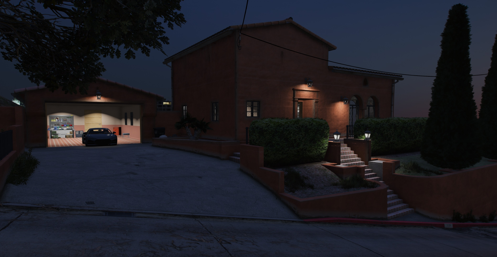
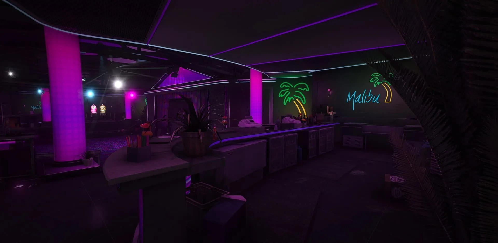

NaturalVision
GTA V · Razed Mods
Új fények, időjárás és textúrák. A támogatói kiadások Patreon-tagsággal érhetők el.
Fizetős modok GTA V-höz és FiveM szerverekhez.
GTA V · Razed Mods
Új fények, időjárás és textúrák. A támogatói kiadások Patreon-tagsággal érhetők el.

FiveM · K4MB1 Maps
Berendezett villa garázzsal, FiveM szerepjátékos szerverekhez.

FiveM · FM Shop
Szórakozóhely tánctérrel, bárral és irodával Los Santosban.